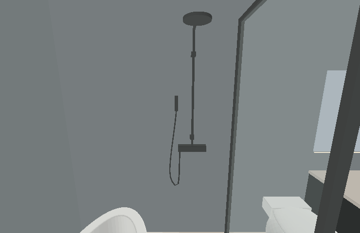

| 現在 | 保留來源 | 中文名稱 |
|---|---|---|
| V1 | 原 V2 | 圓弧中島酒吧+玄關矮櫃 |
| V2 | 原 V3 | 旋轉電視+玄關高矮櫃 |
兩個入口固定使用保留的玄關配置。原 V1、原 V4 已從現行選單與 AI 對照移除；過時 A／B 導覽圖及咖啡吧試作已刪除。家具清單 81 筆、12 區資料保留。15 張 AI 參考圖轉 WebP，圖片尺寸不變。
按業主提供的客變平面，原來浴缸左上方的懸空立桿移到南牆（y483、中心x180），增加貼牆固定座、混合龍頭、手持花灑及软管；頂噴朝淋浴區。混合龍頭中心高105cm、頂噴約215cm為提案高度，並非原圖標註尺寸。

上圖由實際模型網格離線繪製；只核對位置、接合與形體，不呈現貼圖、反射與實際光照。V1、V2 的主浴配置相同。
保留版本與修改前來源逐網格比對，除淋浴組外，其餘 2048／2032 個網格的幾何、變換與材質顏色相同。龍頭固定座貼到 y483 牆面，位置在浴缸左側，避開淋浴門開關範圍。兩版設備、步行、90度開門、RGB、窗簾與 DOM 操作檢查通過；未量測真實 GPU 效能。
新 V3 為 2D 提案，未更動目前兩版 3D。圖面尺寸依現有模型推算。